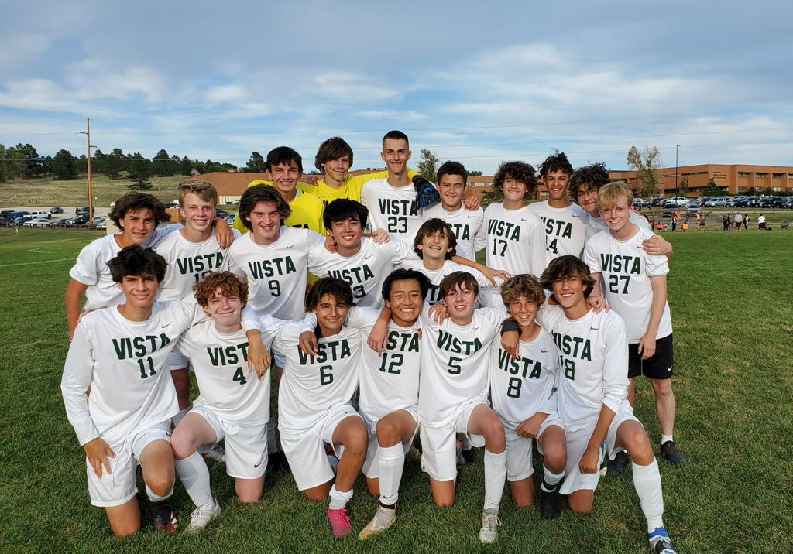
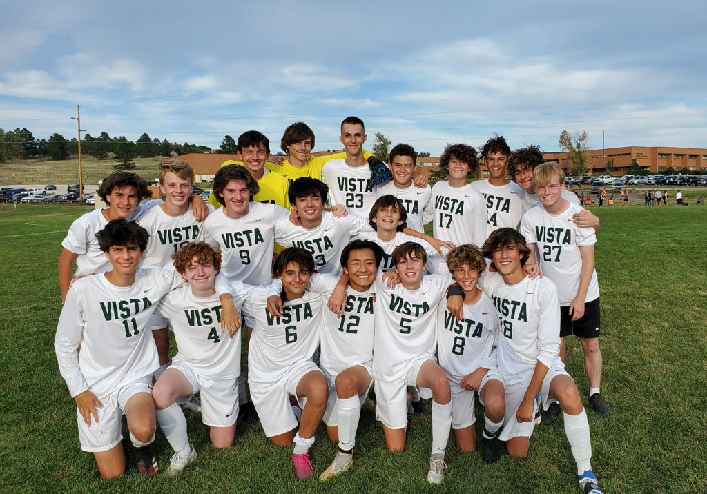

I have been playing soccer my whole life, but i have only played for two teams. Valldoreix is the first one, i joined the team when I was only six years. This club has taught me everything I know about the sport and I have lived incredible moment with my teammates. The second team I have played for is for the Mountain Vista High School, this was my first time playing for the team and I had a lot of fun. We did really great this season getting the second position in the league.
 
